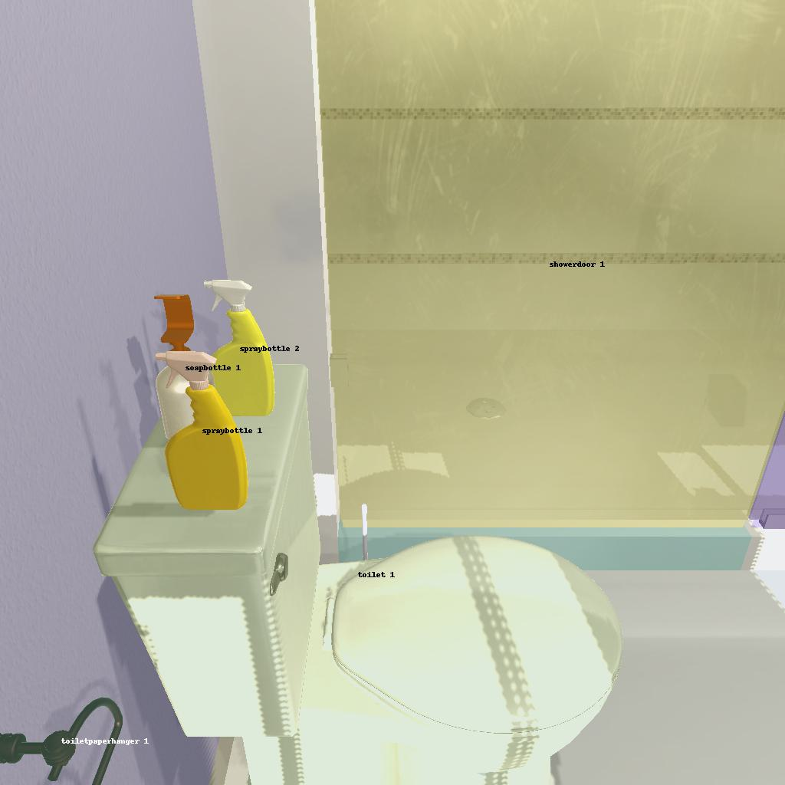

---------------------------------------------------------task: 28---------------------------------------------------------
--------------------------------------------------------------------------------------------------------------------------------------------------------------------
--------------------------------------------------------------------------------------------------------------------------------------------------------------------
Step:--------------------------------------------------------------------------18-------------------------------------------------------------------------------
----------------------------------------
VLM Prompt:
Image1:
Image2:
**Instruction**
1. Analyze the provided image to identify all visible household objects, focusing on those relevant to the task description "find two spraybottle and put them in toilet."
2. Use the analysis of the image and the task hint "The agent must find an object of the desired type, pick it up, find the correct location to place it, put it down there, then look for another object of the desired type, pick it up, return to previous location, and put it down there with the other object." to answer the question: what is the most reasonable action in the choices for the task description "find two spraybottle and put them in toilet"?
4. Decide and write the answer using the template: The answer is: (i): , where i is the real number. If there is no desired object in the image, search every place based on **Initial Observation** to find the object. And if no one is exactly correct, choose a similar answer.
**Initial Observation**
You are in the middle of a room. Looking quickly around you, you can see bathtub (1), bathtubbasin (1), cart (1), sink (1), garbagecan (1), sinkbasin (1), countertop (1), drawer (1-4), toilet (1), toiletpaperhanger (1)
**Answer Choices**
(1): go to bathtub 1
(2): go to bathtubbasin 1
(3): go to cart 1
(4): go to sink 1
(5): go to garbagecan 1
(6): go to sinkbasin 1
(7): go to countertop 1
(8): go to drawer 1
(9): go to drawer 2
(10): go to drawer 3
(11): go to drawer 4
(12): go to toiletpaperhanger 1
(13): put spraybottle 2 in/on toilet 1
(14): examine spraybottle 2
(15): examine toilet 1
**Answer**
Let's think step by step by following the instructions.
----------------------------------------
----------------------------------------
Original Response:
First, we need to identify the spray bottles. From Image 1, we can see "spraybottle 2" and from Image 2, we can see "spraybottle 1" and "spraybottle 2". This means we have identified two spray bottles required for the task.
Next, we need to determine the location of the toilet. In Image 2, "toilet 1" is labeled, indicating where we need to place the spray bottles.
Given the task description, the most reasonable action would be to pick up "spraybottle 2" as it is the one we can see in both images, indicating it is accessible. Then, we will need to go to "toilet 1" to place it down. Therefore, the first action should be to pick up "spraybottle 2".
After picking up "spraybottle 2", we would go to "toilet 1" to put it down there. Since that is the direct instruction from the task description, the action to "put spraybottle 2 in/on toilet 1" is the most reasonable next step.
The answer is: (13): put spraybottle 2 in/on toilet 1
----------------------------------------
----------------------------------------
>>> Refine Original VLM Response and Get Pure Action: put spraybottle 2 in/on toilet 1
----------------------------------------
-----------------------------------------------------------------
Running time: 16.64753556251526 seconds
Total Money: 14.291750000000004
-----------------------------------------------------------------
-----------------------------------------------------------------
Text Observation:You put the spraybottle 2 in/on the toilet 1.
-----------------------------------------------------------------
SUCCEED